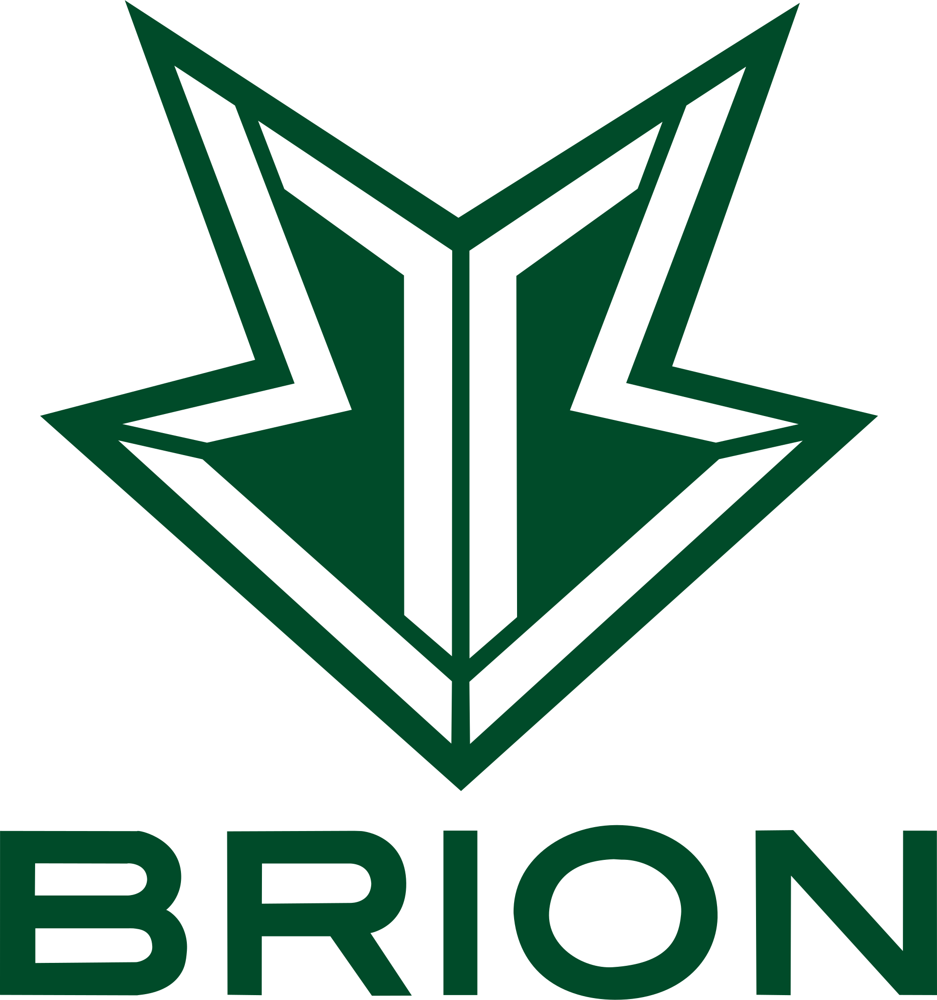

LCK
- T1
- Geng
- Kt
- DK
- Hle
- Kdf
- Bro
- Ns
- Fox
- Drx


Bro
2018년 11월 20일, 스틸에잇이 운영하던 콩두 몬스터를 스포츠 에이전시와 마케팅을
도맡는 기업인 브리온컴퍼니가 인수하면서 팀명을 브리온 블레이드로 변경하였고, 2020년 12월 16일부터
한국야쿠르트와 네이밍 스폰서 계약을 체결하며 하이프레시 블레이드, 프레딧 브리온이라는 팀명을 사용하였고
2023년 1월 4일부로 한국야쿠르트와의 네이밍 스폰서 계약이 종료되면서 팀명을 브리온으로 변경하였으며 2023년 5월 18일부터
OK저축은행과 3년간의 네이밍 스폰서 계약을 체결하며 2025년까지 OK저축은행 브리온으로 활동하게되었다.
LCK의 역사적인 첫 대회였던 2012년 스프링 당시 나진 소속으로 LCK에 그간 등장했던 강팀의 면모를 뿜어내면서 확실한 계보를
남길정도로 풍미하다가 이후 팀이 타 기업에 매각되고 크게 쇠락하면서 수차례의 강등과 승강의 과정을 거쳤으며, 여러 공백이
있는 가운데에서도 원년 시즌 당시에 참가했던 팀들 중 현재까지 유일하게 LCK에 남아있으면서 역대 모든 LCK 팀들 중 가장
역사가오래된 팀으로 남게 되었다.